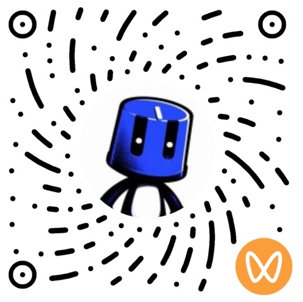
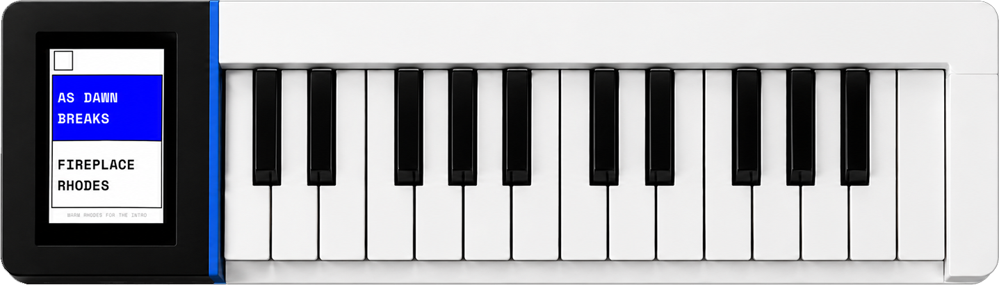

微信扫码关注 Twiddle AI

视频号

公众号
World's First Hardware Synthesizer with Natural Language Timbre Generation
Twiddle SEED is the world's first hardware synthesizer with natural language timbre control. As the debut prototype powered by Twiddle AI's self-developed Inspiration Engine 1.0, it bridges the gap between natural language input and sound — turning natural language input into playable timbres through an integrated display and responsive MIDI keyboard.

Describe any sound in words and hear it instantly. From technical specifications to poetic metaphors, your language becomes your instrument.
A high-resolution screen meets a responsive MIDI keyboard, giving you direct visual and tactile control over every parameter.
A compact, all-in-one form factor designed for studios, stages, and everywhere inspiration strikes.
Built on a Transformer architecture, Inspiration Engine 1.0 is Twiddle AI's end-to-end natural language-to-timbre synthesis algorithm. It translates natural language input into playable sound — from precise professional descriptors like "a bright, gritty, spacious vintage piano" to the poetic inspiration of "I wandered lonely as a cloud / That floats on high o'er vales and hills." This is not preset browsing. It is timbre creation born from language.
A self-developed neural network that understands both technical sound-design vocabulary and the emotional nuance of free-form language.
Handles rigorous professional descriptors and open-ended creative metaphors with equal fluency, capturing both precision and inspiration.
Generate expressive, playable timbres instantaneously. No sampling libraries. No parameter knobs. Just words, transformed into sound.
Tell Twiddle SEED "make it brighter" or "add more warmth" — the algorithm interprets your voice and refines the timbre in real time, one instruction at a time.
Twiddle SEED is currently in prototype phase. The product form you see here does not represent the final design — we are actively exploring new interaction paradigms to dissolve the boundary between human and music creation.
The official release is expected in 2027.
Join the waitlist to follow our journey.
Twiddle AI is a team of engineers and musicians pioneering a new paradigm in sound synthesis. Our self-developed Inspiration Engine 1.0 algorithm — built on an end-to-end Transformer architecture — bridges natural language and musical expression for the first time. Twiddle SEED is the physical embodiment of this vision: the world's first hardware synthesizer that lets you shape sound with nothing but words.
For business inquiries and collaboration, feel free to reach us at contact@twiddle-ai.com

视频号
公众号